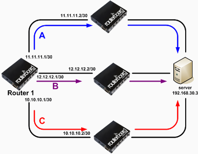
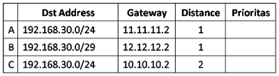
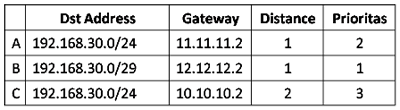
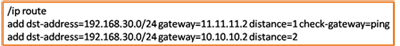

Routing
Routing merupakan sebuah mekanisme pengiriman paket data yang ditransmisikan dari satu network ke network yang lain. Pada sebuah router, biasanya mempunyai sebuah tabel routing atau lebih yang menyimpan informasi jalur routing yang akan digunakan ketika ada pengiriman data yang melewati router. Pada kasus tertentu untuk menuju ke suatu tujuan, router tidak hanya memiliki satu gateway, misalnya karena router harus menghubungkan banyak jaringan yang memiliki segmen yang berbeda. Contoh sederhana bisa kita lihat di topologi berikut :
Lalu bagaimana router menentukan pemilihan jalur routing nya?. Gateway mana yang akan digunakan Router 1 untuk menuju ke Server? Ketika ada lebih dari satu rule routing, router memiliki mekanisme perhitungan jalur routing yang akan digunakan router untuk transmisi data. Pemilihan jalur Routing didasarkan pada beberapa parameter yaitu dst-address dan distance pada tiap rule routing.
- Pertama, router akan memilih rule routing dengan dst-address yang paling spesifik.
- Kemudian Router akan melihat nilai pada parameter Distance di tiap rule routing, semakin kecil Distance, maka rule itu akan digunakan.
- Jika terdapat beberapa rule routing dengan dst-address sama spesifik dan distance sama, maka Router akan memilih dengan Random (round robin).
Dari topologi sebelumnya, didapat rule routing seperti gambar.
Bagaimana urutan prioritas jalur yg akan digunakan Router 1?. Kita akan coba bahas berdasarkan mekanisme pemilihan jalur routing oleh router. Perlu diingat, trafik yang akan ditransmisikan adalah trafik dari Router 1 menuju ke Server dengan IP Address 192.168.30.3. Coba perhatikan pada rule routing tadi, Untuk tujuan IP 192.168.30.3 dst-address=192.168.30.0/29 lebih spesifik dibanding dst-address=192.168.30.0/24, sehingga rule B akan digunakan sebagai prioritas pertama. Lalu rule mana yang akan dijadikan prioritas 2 dan 3?. Perhatikan rule A dan C. Keduanya memiliki dst-address yg sama - sama /24, akan tetapi nilai distance kedua rule tersebut berbeda. Antara rule routing A dan C, router akan memilih A, karena nilai parameter distance pada rule A lebih kecil dibanding rule C. Bisa disimpulkan bahwa dari pembahasan tadi akan didapat jawaban seperti berikut :
By default nilai distance ditentukan sesuai jenis routing yang diterapkan, misalnya untuk Static Route=1, OSPF=110, RIP=120, dsb. Akan tetapi nilai parameter distance tersebut bisa juga diubah, untuk membuat sebuah mekanisme failover sederhana. Contoh impelementasi failover sederhana adalah ketika ada 2 rule routing dengan distance yang berbeda, perhatikan rule routing berikut :
Pada contoh tersebut, jalur utama untuk menuju ke 192.168.30.0/24 adalah gateway 11.11.11.2. Jika gateway 11.11.11.2 putus/mati, maka secara otomatis informasi rule routing yang akan digunakan router untuk transmisi data akan berpindah menggunakan jalur backup, yaitu gateway 10.10.10.2. Admin jaringan tidak perlu repot - repot mengganti informasi tabel routing secara manual.